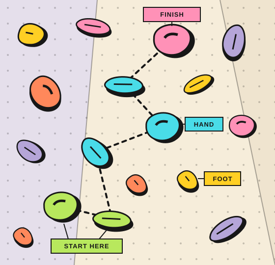

THE HOLDS
Less tracing.
More climbing.
Let AI-assisted hold detection do the first pass. Review and refine the holds, then spend your energy on the interesting part: the next move.
THE OPEN-SOURCE SPRAY WALL APP
Turn a photo of your spray wall into climbs worth coming back for. AI finds the holds. You set the problems.
For home walls, gym caves & everything in between.

01 / FROM WALL TO WHAT’S NEXT
That chaotic collection of holds?
It’s a whole lot of climbs waiting to happen.
Upload a photo of your spray wall. Start with the holds you already have, on the wall you already love.
AI-assisted detection maps your holds. Review the results, adjust what needs adjusting, and make it yours.
Pick your line, give it a grade, and get climbing. Save the attempts, the sends, and the notes for next time.
02 / A LITTLE ORDER IN THE CHAOS
Set something weird. Work your project.
Remember what went down.
Let AI-assisted hold detection do the first pass. Review and refine the holds, then spend your energy on the interesting part: the next move.
Choose start, hand, finish, and foot holds. Add a name, grade, and style tags. A new line, without moving a single hold.
Organize climbs into circuits. Record attempts, sends, flashes, and notes in your logbook. Add beta video links to remember the move that made it click.
A mobile-first web app you can add to your home screen. Browse cached walls and recently viewed climbs offline; connect again to make changes.
03 / YOUR SERVER. YOUR SESSION.
Open source. Self-hosted. Made for the wall you call home. Run Spraywall on your own infrastructure with Docker Compose and prebuilt images.
Hold detection runs locally on CPU, with optional NVIDIA GPU support. You choose where your instance lives.
Get the self-hosting guideDownload the deployment Compose file and example environment file from the guide.
Set your database, storage, and JWT secrets in .env. Keep those credentials private.
Once configured, start the services from your deployment directory:
docker compose up -dThis is the overview, not the whole install.
Follow the full setup instructions
SAME HOLDS. FRESH OBSESSION.